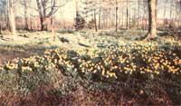
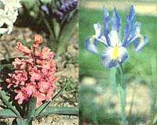
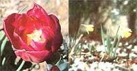
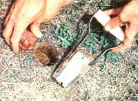
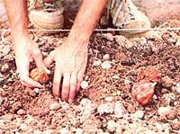
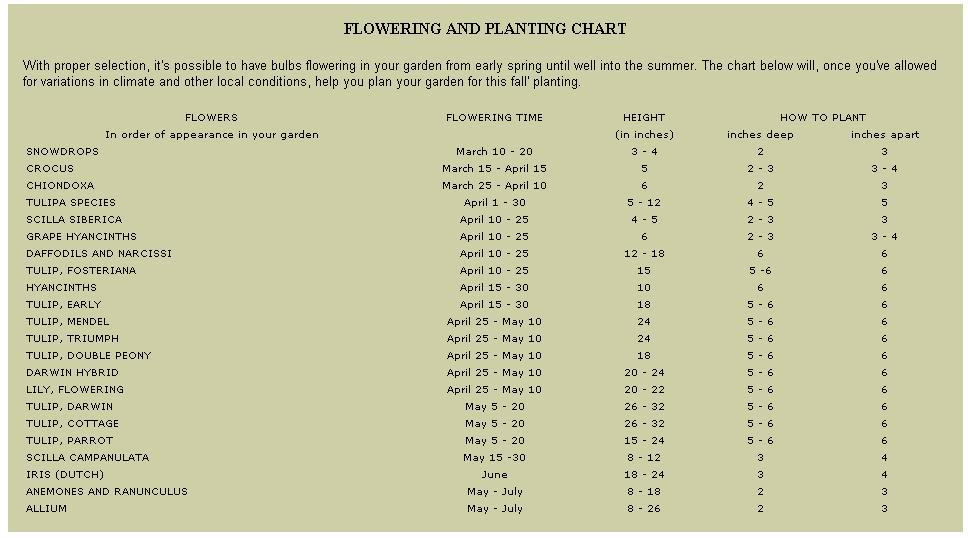

The Beauty Of Bulbs
A vegetable garden can be a bonus to the budget ... but flowers can feed your soul!
By the Mother Earth News editors
September/October 1981
These thick, modified stems or roots (the group actually comprises corms, tubers, tuberous roots, and rhizomes as well as true bulbs) allow their plants to be food self-sufficient while the feeder roots have time to develop. Therefore, even no-luck gardeners can expect their bulbs to produce a beautiful flower crop ...at least for one season. However, if you take the time to cultivate bulbs with care, you'll be delighted at the wonderful ease with which you can make your yard continue to burst forth in ever-multiplying blooms, year after year.
JUDICIOUS CHOICES
Folks who want bulbs that can be planted with little work (and anticipated with little worry) should begin by growing hardy types, which can survive cold winters in the ground. This category includes some of our most beautiful flowers: narcissus (the family name for hundreds of daffodils and jonquils), tulip, crocus, allium, anemone, camassia, lily of the valley, grape hyacinth, snowdrop, iris, snowflake, a large number of lilies ...and many less-well-known blooms.
Hall-hardy bulbs-hyacinth, amaryllis, canna, cyclamen, and gladiolus, for example-will need to be covered with layers of mulch (the depth will depend upon the harshness of the winter) if they're to survive outdoors in a cold climate. And the tender (but very beautiful) types such as kaffir lily, cooperia, sparaxis, and heavily scented freesia may have to be taken up each year. (In mild climates, most bulbs can be treated as hardy or half-hardy ...as can even especially tender varieties in areas without frosts.)
Whatever flowers you choose, buy the plumpest and firmest bulbs you can find, and purchase them as soon as possible after they become available. Then open the boxes and bags immediately and put the plantables in a dry place where air can circulate among them freely. Should there be a delay in getting your purchases in the ground, it's wise to spread them on (labeled) trays or paper. By doing so, you can usually prevent the formation of premature shoots and roots that might be injured when the bulbs are planted.
In fact, careful handling should always be the rule when dealing with these sleeping beauties, because a small plant embryo already exists inside each true bulb, and any cuts and bruises can invite infection and disease.
A SUITABLE LOCATION
Aside from a gentle hand, most bulbs demand little more than a sunny exposure and fairly rich soil with good texture and drainage (they'll usually thrive in well-prepared raised beds). It's best, however, to check out each variety's particular preferences by referring to a good plant encyclopedia or garden book. Hardy Bulbs by Louise Beebe Wilder (Peter Smith Publishing, $7.50) has, for example, been a classic source of information and inspiration for bulb growers since 1936.
Although flowering bulbs aren't heavy feeders, you should keep in mind-when preparing the soil-that phosphorus encourages bloom development ...potassium builds strong stems and roots ...and nitrogen stimulates foliage growth. Thus, if you add too much of the last nutrient, you may well end up with an abundance of luxuriant leaves but very small blossoms (or none at all). Note, too, that horse manure will burn the herbaceous perennials, but very old and rotted cow manure can be spread as an autumn mulch or applied lightly-and scratched in with a rake -in the early spring. Most bulb gardeners, however, prefer to feed their charges with bone meal, which gives up its nourishing properties slowly ...and therefore closely matches the needs of the growing plant. Peat moss, leaf mold, and other organic materials will also help porous soil retain moisture, while builder's sand can be used to loosen up earth that contains too much clay.
AN ARTISTIC ARRAY
The creation of striking floral patterns with bulbs is-if you give the matter a little forethought-easy, fun, and rewarding. It can be done in three basic ways: by massing the plants in formal beds and borders ...by clustering them in small groups to add spots of color here and there in your yard ...or by naturalizing the blooms, an artful planting method that makes it appear as if Mother Nature had wind-strewn the flowers with a generous hand (or dropped some, by mistake, in unexpected locations).
[1] When preparing a bed of flowers that you expect will all grow to approximately the same height, first remove a layer of soil down to the depth required for the plant in question (as a general rule, this is three times the bulb's diameter at its widest point, but dig a bit deeper in sandy soil and a little shallower in clay-heavy earth) ...add bone meal, at a ratio of five pounds per 100 square feet, in the bottom of the bed (in subsequent years, simply apply this fertilizer to the soil's surface and cultivate it in) ...place your bulbs in the pattern in which you wish them to grow and bloom ...and cover them with firmly (but gently) tamped topsoil. (If you have trouble with rodents, such as tulip loving gophers, you might want to line your bed with galvanized hardware cloth.) Spacing, as it turns out, is mostly a matter of taste, since-although the bulbs shouldn't actually touch-they don't mind being crowded as long as there's enough nourishment in the soil to support them.
[2] If you'd prefer to produce clusters of color rather than entire beds, dig small planting areas or even a number of closely spaced individual holes. But before you cover the bulbs with earth, be certain you haven't left any loose soil or air pockets below them. You can take care of this potential problem-and assure good drainage-by putting a handful of sand in each hole. Should you plant in a rock garden, which is an environment favored by many small bulbs, be sure the soil pockets are deep enough to accommodate the mature roots.
[3] To naturalize your flowers, you must forget boundaries and borders. Instead, throw your future blossoms out by the mixed handful, then dig them in-using the technique described above-where they fall. Don't crowd the bulbs too much, however, since you'll want some room for them to multiply ... and let a few trail away in drifts and patches from the main planting area.
With any of these methods, water the newly tucked-in bulbs thoroughly, to stimulate root growth and settle the soil. In cold climates, you should also remember to protect half-hardy and tender varieties with layers of mulch. (During the summer, the mulch will help retain moisture, keep down weeds that compete for nutrients, and prevent mud from splattering on the plants.) Once the shoots appear, water them deeply whenever the surface soil is dry. It's best, however, that this chore be done in the morning, and never when the sun is hot. When the plants bloom, water more frequently, but less so as the foliage begins to fade.
A HEAVENLY HARVEST
If you want cut flowers, harvest them just before the buds begin to open up. The exceptions to this rule are flowers on spikes, such as gladioluses-which should be cut after the first two buds unfurl -and late tulips (including the Darwin varieties), which need extra time to reach their full size and shouldn't be taken indoors until they've been open for several days. (In order to produce long-lasting flower arrangements, place the blooms in a vase of cold water, and put it in a dark place for about ten hours. Then, every time you make your daily water change, snip off a small piece from the bottom of each blossom's stem.)
Should you prefer to let the flowers live out their lives in the yard, it's still best to remove them, along with their stems, as they begin to fade ...thereby directing the plants' energy toward producing more vigorous bulbs rather than seeds. In the process, however, cut off as little foliage as possible, since it's from these leaves that the bulbs receive the nutrients that will insure the following year's blooms. In fact, though it may look untidy to do so, you must allow the leaves to die back naturally until they turn yellow ...which is your clue that the food-storage process has been completed.
During the yellowing stage, you can spruce up the garden if you bind the fading plant tops together with rubber bands ...braid the leaves ...or-better yet -camouflage the foliage with some annuals and perennials such as viola, ageratum, English daisy, primrose, or a flowering ground cover. Then, when the leaves are finally cut away, the bulbs will appreciate a light mulch of sand and leaf mold.
BEAUTY MULTIPLIED
One factor that endears this group of plants to many cost-conscious folks is the manner in which they multiply. Once true bulbs have reached their maximum size, they produce two or more baby bulblets (which are called offsets) that can be broken off and replanted. Corms that have bloomed disappear, but leave behind one or two new corms when they do. And you can divide tubers, tuberous roots, and rhizomes by simply cutting them into smaller pieces (as you would seed potatoes), each of which must include an eye or part of the stem base in order to form a new plant.
Though the time required for these different reproduction processes will vary among plant types, most bulbs will let you know when it's time to dig them up, divide them, and set them out again in fresh soil ...simply by flowering less. (If you want your formal bed-particularly one composed of tulips-to stay neat and uniform, you may have to replant it each year. Place the old bulbs, which often produce flowers of various heights that would destroy the symmetry of your planned plantings, in other places about the yard.) The "lifting" process is easiest to do when the yellowed leaves show you where to dig ...and, because you won" want to damage the bulbs, use a garden fork rather than a spade or trowel.
If you choose to store your lifted bulbs for planting during the following fall, they must first be "cured". To accomplish this, tie the foliage of several bulbs together and hang them from a rafter, or arrange them in a single layer in ventilated trays out of the sun. Then, when they're dry enough for a gentle rubbing to remove adhering soil and old skins, pull or cut off the tops ...dispose of any diseased bulbs ...separate the offsets from the "mother" bulbs ...label each variety and color to avoid future confusion ...put them in a cool, dry, dark, well-ventilated place ...and you'll be all set to grow even more abundant and glorious blossoms in future seasons.
BULB SOURCES
Prices vary greatly, so it pays to shop around, or-next season-to take advantage of early summer sales on bulbs that will 6e shipped to you the following tall. Almost all major garden supply outfits-such as Burpee and Goo. W. Park-carry good selections, but here are some businesses that specialize in the sleeping beauties:
C.A. Cruickshank, Ltd., Dept. TMEN, 105 Mount Pleasant Road, Toronto, Ontario, Canada M4P 2M1 (catalog $1.00, refundable with first purchase)
John Messelaar Bulb Co., Inc., Dept. TMEN, P.O. Box 269, Route 1A, Ipswich, Massachusetts 01938 (free catalog)
Van Bourgondien Brothers, Dept. TMEN, P.O. Box A, Babylon, New York 11702 (free catalog)
Breck's, Dept. TMEN, 6523 North Galena Road, Peoria, Illinois 61632 (free catalog)
P. DeJager & Sons, Inc., Dept. TMEN, 188 Asbury Street, South Hamilton, Massachusetts 01982 (catalog 504, free to customers)
SPRING' IN WINTER
When you plant your outdoor bulbs, be sure to reserve a few ...which you can then use to provide indoor winter cheer by employing a technique called "forcing". (Narcissus, crocus, hyacinth, freesia, tulip, snowdrop, lily of the valley, begonia, and oxalis are all good for this purpose.) The housebound blooms can be grown in water, fiber, or soil, but -because water, or such mediums as sphagnum moss and coconut fiber, lack the nutrients that will enable the bulb to bloom the following seasonit's probably best to put them in real earth.
For this purpose, choose a clay pot with a drainage hole, and soak it in water. Then fill the container with potting soil to within half an inch of the top, and-unless you're growing large varieties-plant a few bulbs close together, but not quite touching. (Large bulbs should be set atone in the pot and level with-or even slightly above-the soil's surface, while smaller ones can be planted a little deeper.) Label the container and water the soil thoroughly.
Now, put the pot in a cool, dark place that's not subject to freezing temperatures, and keep the growing medium slightly moist. Eight to twelve weeks later, gently tap out dirt and bulbs to check for root development, which should be visible at the bottom or edge of the soil mass. (Some colorless top shoots may also be showing at this time.) When the roots appear to be strong, gradually expose the tender plants to full sunlight ...but proceed slowly at this point! If they're brought directly into a bright, heated environment, their leaves may grow so rapidly that no blooms occur ...a condition which is called "coming blind".
Keep the soil evenly moist, and feed your winter beauties with periodic doses of plant food. As the leaves fade, reduce the amount of water provided, and withhold any fertilizer. Once the foliage has completely yellowed, the bulbs may be turned out of the pots to be dried, stored away, and planted outdoors the following fall.
If you start the forcing process in late September or October and pot additional bulbs every two weeks or so, you can have fragrant, long-lasting blooms in. doors all winter long.
 Photos By Ron and Mary Ann Schanfish and Mother's Staff For a formal bulb bed, clear away topsoil-from level area to the bulbs' planting depth. Note the layer of mulch that helps to retain moisture and keeps mud off the flowers. |
 Artful naturalizing makes your planting look as if Mother Nature had strewn the bulbs out. |
 LEFT: Hyacinths, one of spring's earliest and sweetest-scented blossoms, are also good for winter forcing. RIGHT: Iris can be hardly and colorful addition to your yard. |
|
 LEFT: By planting differnet tulip varieties, you can enjoy a rainbow of colors all through April and May. RIGHT: Daffodils defy late frosts. |
 A bulb planter speeds the setting-out process. |
 To add nice spots of color ti your yard, you can dig small beds or closely spaced individual holes. |
|
 |
|
|